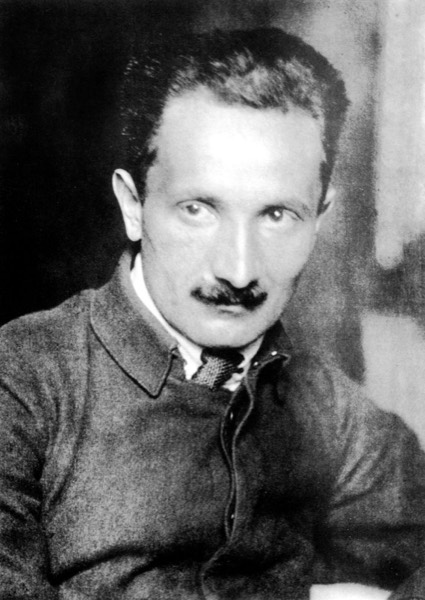

一本没写完的书，改写了整个世纪
它是残篇。原计划两部各三篇，实际只出了第一部的前两篇——约三分之一。而它没写完的原因非常世俗：马堡要提名他接教席，柏林教育部嫌他发表太少，他只好把手头写了一半的稿子交出去。
这一页给你一份可执行的读法：怎么引用、先读哪几节、哪几节可以先跳、第三篇为什么永远没来，以及那个至今没有定论的问题——它到底是没写完，还是写不下去。
1923–1928，马堡

三件事先说清楚
一、引用法：认 H. 页码，不认中译页码
国际通行的引用方式是节号 + 德文单行本（Niemeyer 版）页码，写作 SZ §16, H.73。中译本、英译本的边码都会印出 H. 页码，所以你手上无论哪个版本，都能对上。这一点在查证引文时是刚需——本站所有引文都按这个格式标注。
二、译本：陈嘉映 / 王庆节
中译以陈嘉映、王庆节译本（三联）为准。"此在""上手""被抛""沉沦""操劳"这套汉语术语基本从这里定型。英语世界常用 Macquarrie & Robinson (1962) 与 Stambaugh (1996) 两个译本，术语选择不同（如 Dasein 通常不译）。
三、它的难，有一半是词造成的
海德格尔大量自造词、拆词、给日常词赋新义。这不完全是故弄玄虚——他的论点之一就是现成的哲学词汇已经被形而上学传统污染，用它们说话就等于默认了它们的预设。但代价是真实的：读这本书，前两百页你有一大半精力花在学词汇表上，而不是在跟随论证。这是它劝退率高的主因，不是你的问题。
计划里的六篇，出版的两篇
三分之一 1927 年出版的是第一部前两篇。第一部第三篇《时间与存在》原本要完成全书最关键的一跃——从此在的时间性跳到"存在本身的意义"。它没有来。1962 年他倒是做过一场同名讲演，但那已经是完全不同的思路了。
怎么走这条路
为什么"存在"这个问题必须重新问一遍
他要先说服你：这个看起来最空洞的词，恰恰是最没被搞清楚的。三条传统偏见挡在前面——存在是最普遍的概念、存在无法定义、存在是不言自明的。他逐条拆掉，然后提出方法：现象学，"让那显示自身者，如它从自身所显示的那样，从其自身被看见"。
此在的准备性基础分析
如果时间只够读一部分，读这里。德雷福斯 1991 年那本厚厚的评注，写的也只有这一篇。
- §9（H.42） "此在的『本质』在于它的生存。"全书的地基句。
- §12–13 在世界之中存在。连字符的意义、对"在之中"作空间解释的批判。
- §14–18 世界之为世界。§15–16 是全书最著名的一段——用具、上手状态、三种断裂（H.73–74）、指引整体性。本站的交互实验台就做在这一段上。
- §19–21 对笛卡尔的正面清算：为什么"广延实体"这个世界概念跳过了世界之为世界的问题。
- §25–27 日常此在是谁？答案是常人（das Man）。
- §28–34 "此"的展开状态：情态（Befindlichkeit）、领会、筹划、话语。§29 被抛状态，§31 筹划。
- §35–38 沉沦四相：闲言、好奇、两可、沉沦本身。今天读起来最像在说信息流的一段。
- §39–42 操心（Sorge）作为此在的存在，附一则古罗马"忧神造人"的寓言。
- §43–44 实在性与真理。§44 把真理还原为无蔽（ἀλήθεια）——三十七年后他会亲自修正这里的字源论证。
此在与时间性：把前面的分析重做一遍
第二篇不是往前走，是回过头把第一篇重做一遍——第一篇是"准备性"的，因为它没能抓住此在的整体。人只要还活着就总有未完成的可能性，那怎么把一个尚未终结的东西整体地把握？他的答案是死亡。
- §46–53 向死存在。§50（H.251）、§52（H.258–259） 是死亡定义的两处关键。见概念第 V 节。
- §54–60 良知的呼唤与罪责。此在如何在沉沦中被唤回本己的能在——这一段最容易被读成道德说教，而海德格尔坚持它是存在论描述。
- §61–66 本真的整体能在：先行的决心。
- §67–71 时间性作为操心的存在论意义。将来—曾在—当前三个"绽出"，以及为什么将来在海德格尔这里居于首位——这与常识时间观（过去→现在→将来）正好相反。
- §72–77 历史性。此在的"命运"与"天命"（Schicksal / Geschick）。这几节的措辞在 1933 年之后被反复检视，是政治问题的文本争议地带之一。
- §78–83 流俗时间概念的来源。结尾以一串没有回答的问题收场。
它是没写完，还是写不下去？
这是海德格尔研究里最有意思的悬案之一。两种读法：
只是没写完
外部原因充分：晋升压力逼着他仓促交稿，之后是弗莱堡讲席、行政事务、政治卷入。1929 年他确实把第二部第一项单独写成了《康德与形而上学问题》。剩下的只是没排上日程。
路走不通了
第三篇要完成的那一跃，是从"此在的时间性"跳到"存在本身的意义"。问题在于：整套分析都是从此在出发的，而目标是超出此在的东西。用此在的语言，说不出不属于此在的存在。后期的"转向"，可以读作他承认这条路走不通，换了个方向重来。
他本人的说法偏向 B：晚年谈及全书计划时，他说继续按原方案完成是一种"幻觉"。而 1962 年他做的那场题为《时间与存在》的讲演——正是第三篇原本的标题——内容与 1927 年的设想已经完全不是一回事了。
按你的时间选一条
本页图片取自 Wikimedia Commons：马堡老大学（摄影 A. Savin，Free Art License，一种与 CC BY-SA 同类的 copyleft 自由许可）；1920 年代海德格尔肖像（公有领域 PD-Germany，作者不明）。本页未收录 1927 年首版书影——《存在与时间》初版扉页与《哲学与现象学研究年鉴》第 8 卷在 Commons 上均无可自由使用的图片，宁可空着。完整许可以 Commons 各文件页为准；如有版权问题请通过 GitHub issue 联系。